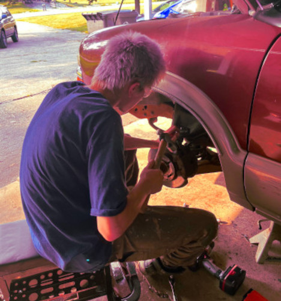

My pride and joy is my 1976 MG Midget, a classic British roadster that I’ve been restoring since I was 18. I bought it just a week after my birthday, and it’s been my ultimate classic car restoration project ever since. The MG Midget’s compact design, timeless style, and the thrill of bringing an old car back to life make it a dream to work on. I’ve spent countless hours tinkering with the engine, fixing up the interior, and learning the ins and outs of working on cars. Every challenge—whether it’s sourcing rare parts or troubleshooting engine issues—has taught me patience and problem-solving. There’s nothing more rewarding than hearing that engine roar after hours of hard work. The MG Midget isn’t just a car; it’s a passion project that keeps me inspired.
While the MG Midget is my passion project, my daily drivers keep me grounded. I rely on my trusty Toyota Highlander (Unnamed) for everyday life and road trips—it’s the perfect blend of comfort and reliability. Then there’s my ’98 Chevy S10 (Darlene), a rugged beater truck that’s seen its fair share of adventures. It’s not the prettiest, but it’s a reminder that cars don’t have to be perfect to be loved. Whether hauling 1,300lbs of scrap, or going out on the town, ol’ Darlene has stood by me. For me, cars are more than just machines—they’re a way to express creativity, learn new skills, and spend time productively alone.
